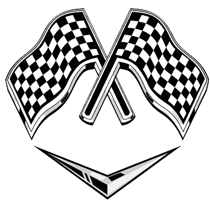

Competição
Data: 20/09/2024
Descrição: Participe da nossa emocionante competição de corrida! Mostre suas habilidades ao volante e conquiste prêmios incríveis.
Prêmios:
- 1º Lugar: 5 Carros Exclusivos no Jogo
- 2º Lugar: R$ 150 em Créditos Reais
- 3º Lugar: 3 Carros Exclusivos no Jogo
Inscrições: As inscrições estão fechadas para este evento. Fique atento para futuros eventos!
Local: Arena Principal do Servidor